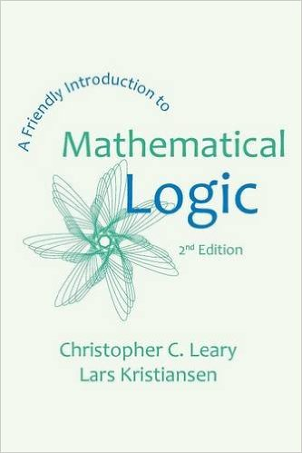

Leary and Kristiansen: A Friendly Introduction to Mathematical Logic

Christopher C. Leary and Lars Kristiansen’s A Friendly Introduction to Mathematical Logic (Milne Library 2015: pp. 364 — ISBN 978-1-942341-07-9) is the second, significantly expanded, edition of a fine book originally just authored by Leary (Prentice Hall, 2000: pp. 218). The book is now available at a very attractive price; the main differences between the editions are a long new chapter on computability theory, and some 75 pages of solutions to exercises.
So how friendly is A Friendly Introduction? – meaning, of course, ‘friendly’ by the standard of logic books!** I do like the tone a great deal (without being the least patronizing, it is indeed relaxed and inviting), and the level of exposition seems to me to be very well-judged for an introductory course. The book is officially aimed mostly at mathematics undergraduates without assuming any particular background knowledge. But as the Preface notes, it should also be accessible to logic-minded philosophers who are happy to work at following rather abstract arguments (and, I would add, who are also happy to skip over just a few inessential elementary mathematical illustrations).
What does the book cover? Basic first-order logic (up to the L-S theorems), the incompleteness theorems, and some computability theory. But by being so tightly focused, this book rarely seems to rush at what it does cover: the pace is pretty even. The authors do opt for a Hilbertian axiomatic system of logic, with fairly brisk explanations. (If you’d never seen before a serious formal system for first-order logic this could initially make for a somewhat dense read: if on the other hand you have been introduced to logic by trees or seen a natural deduction presentation, you would perhaps welcome a paragraph or two explaining the advantages for present purposes of the choice of an axiomatic approach here.) But the clarity is indeed exemplary.
Some details Ch. 1, ‘Structures and languages’, starts by talking of first-order languages (The authors make the good choice of not starting over again with propositional logic, but assume that most readers will know their truth-tables so just give quick revision). The chapter then moves on to explaining the idea of first order structures, and truth-in-a-structure. There is a good amount of motivational chat as we go through, and the exercises – as elsewhere in the book – seem particularly well-designed to aid understanding. (The solutions to exercises added to the new edition makes the book even more suitable for self-study.)
Ch. 2, ‘Deductions’, introduces an essentially Hilbertian logical system and proves its soundness: it also considers systems with additional non-logical axioms. The logical primitives are ‘ ∨ ’, ‘¬’, ‘∀’ and ‘ = ’. Logical axioms are just the identity axioms, an axiom-version of ∀-elimination (and its dual, ∃-introduction): the inference rules are ∀-introduction (and its dual) and a rule which allows us to infer φ from a finite set of premisses Γ if it is an instance of a tautological entailment. I don’t think this is the friendliest ever logical system (and no doubt for reasons of brevity, the authors don’t pause to consider alternative options); but it certainly is not horrible either. If you take it slowly, the exposition here should be quite manageable even for the not-very-mathematical.
Ch. 3, ‘Completeness and compactness’, gives a nice version of a Henkin-style completeness theorem for the described deductive system, then proves compactness and the upward and downward Löwenheim-Skolem theorems (the latter in the version ‘if L is a countable language and \(latex \frak{B}\) is an L-structure, then \(latex \frak{B}\) has a countable elementary substructure’ [the proof might be found just a bit tricky though]). So there is a little model theory here as well as the completeness proof: and you could well read this chapter without reading the previous ones if you are already reasonably up to speed on structures, languages, and deductive systems. And so, in a hundred pages, we wrap up what is indeed a pretty friendly introduction to FOL.
Ch. 4, ‘Incompleteness, from two points of view’ is a helpful bridge chapter, outlining the route ahead, and then defining \(latex \Sigma, \Pi\) and \(latex \Delta\) wffs (no subscripts in their usage, and exponentials are atomic — maybe a footnote would have been wise, to help students when they encounter other uses). Then in Ch. 5, ‘Syntactic Incompleteness—Groundwork’, the authors (re)introduce the theory they call N, a version of Robinson Arithmetic with exponentiation built in. They then show that (given a scheme of Gödel coding) that the usual numerical properties and relations involved in the arithmetization of syntax – such as, ultimately, Prf(m, n), i.e. **m* codes for an N-proof of the formula numbered *n** – can be represented in N. They do this by the direct method. That is to say, instead of [like my IGT] showing that those properties/relations are (primitive) recursive, and that N can represent all (primitive) recursive relations, they directly write down \(latex \Delta\) wffs which represent them. This is inevitably gets more than a bit messy: but they have a very good stab at motivating every step working up to showing that N can express Prf(m, n) by a \(latex \Delta\) wff. If you want a full-dress demonstration of this result, then this is one of the most user-friendly available.
Ch. 6, ‘The Incompleteness Theorems’, is then pretty short: but all the groundwork has been done to enable the authors now to give a brisk but very clear presentation, at least after they have proved the Diagonalization Lemma. I did complain that, in the first edition, the proof of the Lemma was slightly too rabbit-out-of-a-hat for my liking. This edition I think notably softens the blow (one of many such small but significant improvements, as well as the major additions). And with the Lemma in place, the rest of the chapter goes very nicely and accessibly. We get the first incompleteness theorem in its semantic version, the undecidability of arithmetic, Tarksi’s theorem, the syntactic version of incompleteness and then Rosser’s improvement. Then there is nice section giving Boolos’s proof of incompleteness echoing the Berry paradox. Finally, the second theorem is proved by assuming (though not proving) the derivability conditions.
The newly added Ch. 7, ‘Computability theory’ starts with a very brief section on historical origins, mentioning Turing machines etc.: but we then settle to exploring the \(\latex \mu\)-recursive functions. We get some way, including the S-m-n theorem and a full-dress proof of Kleene’s Normal Form Theorem (with due apologies for the necessary hacking though details) and meet the standard definition of the set \(latex K = \{x \mid x \in W_x\}\) where \(latex W_x\) is the domain of the computable function with index \(latex x\). The uncomputability of \(latex K\) is then used, in the usual sort of way, to prove the undecidability of the Entscheidungsproblem, to re-prove the incompleteness theorem, and in tackling Hilbert’s 10th problem. This is all nicely done in the same spirit and with the same level of accessibility as the previous chapters.
Summary verdict If you have already briefly met a formally presented deductive system for first-order logic, and some account of its semantics, then you’ll find the opening two chapters of this book very manageable (if you haven’t they’ll be a bit more work). The treatment of completeness etc. in Ch. 3 would make for a nice stand-alone treatment even if you don’t read the first two chapters. Or you could just start the book by reading §2.8 (where N is first mentioned), and then read the excellent ensuing chapters on incompleteness and computability with a lot of profit. A Friendly Introduction is indeed in many ways a very unusually likeable introduction to the material it covers, and has a great deal to recommend it.